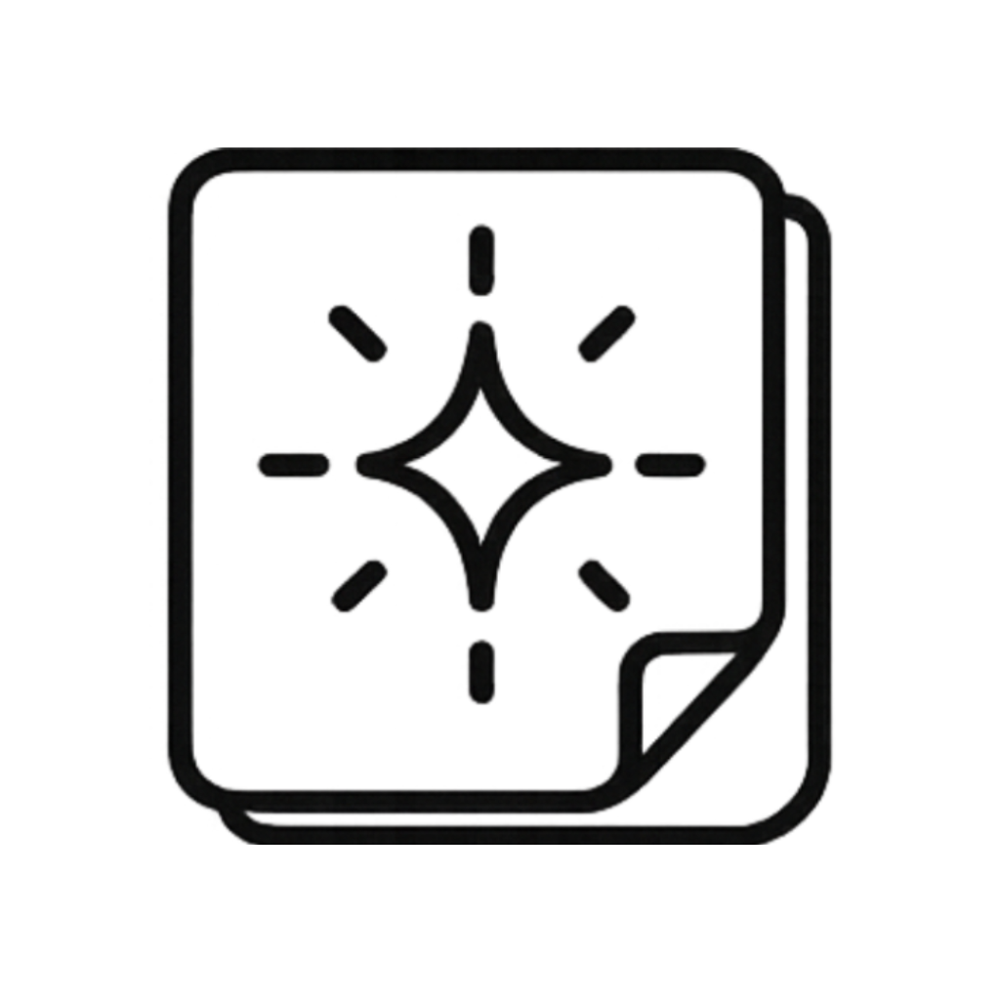

Policy

Spark Note Privacy Policy
Effective date: May 31, 2026
Overview
Spark Note is a local-first note app designed for quick capture, organization, and reflection.
Data Storage
Spark Note stores your notes, boxes, settings, trash, theme preference, and Spark usage data on your device. Spark Note does not require an account.
Backups
Spark Note supports manual JSON backup export and import. Backup files are created only when you choose to export them. You are responsible for where exported backup files are saved or shared.
Importing a backup replaces the current local app data only after you confirm the import.
Data Collection
Spark Note does not currently collect personal data. Spark Note does not currently use advertising, third-party tracking, analytics SDKs, or account-based cloud sync.
Network Use
Spark Note is currently designed to work with local device storage. If future versions add sync, cloud backup, analytics, or other network features, this privacy policy will be updated before those features are released.
Contact
For support or privacy questions, contact zis.tech.support@gmail.com.
Changes
This policy may be updated as Spark Note changes. The effective date above will be updated when the policy changes.